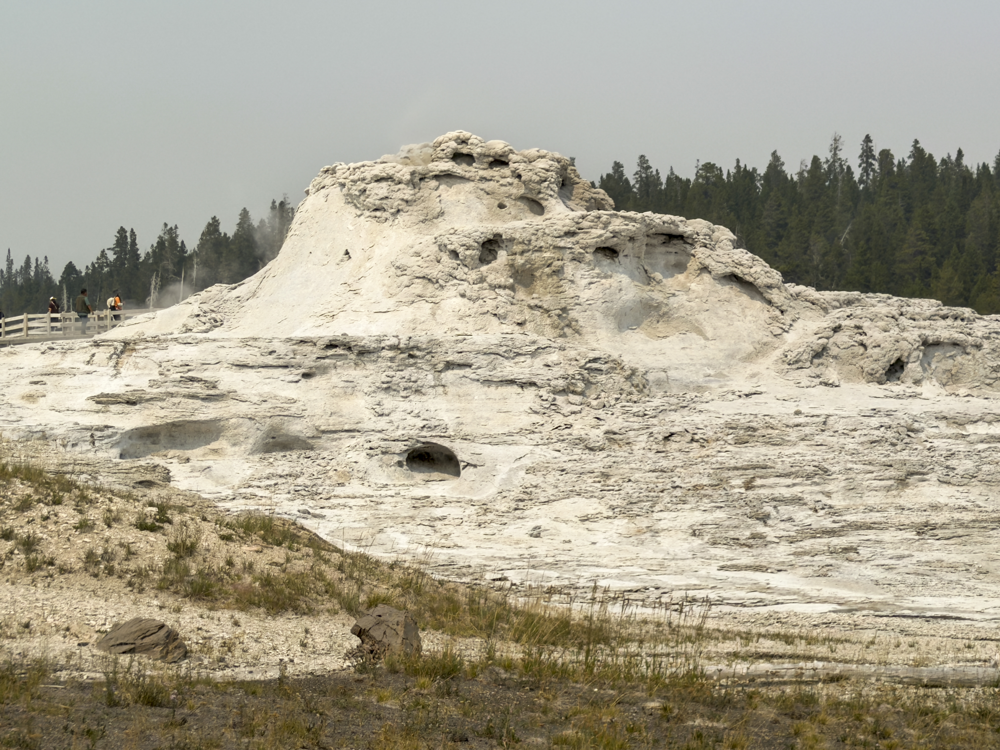
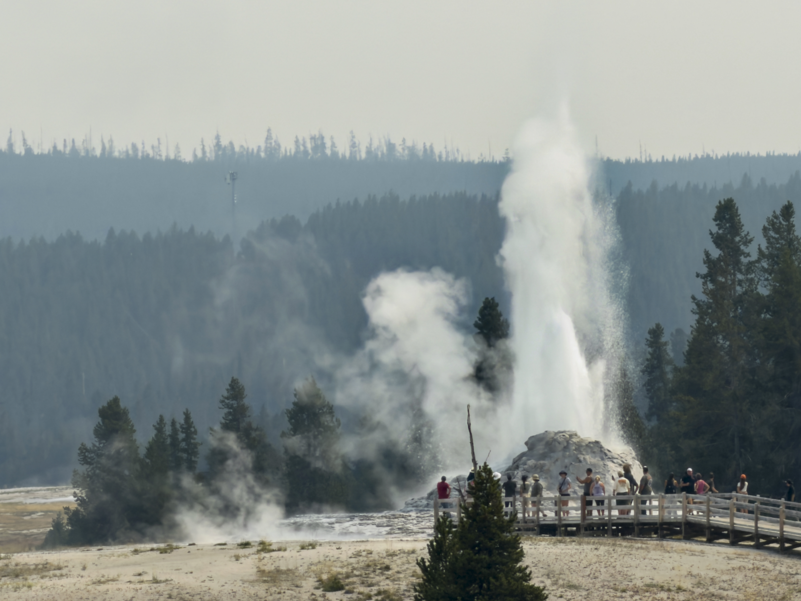
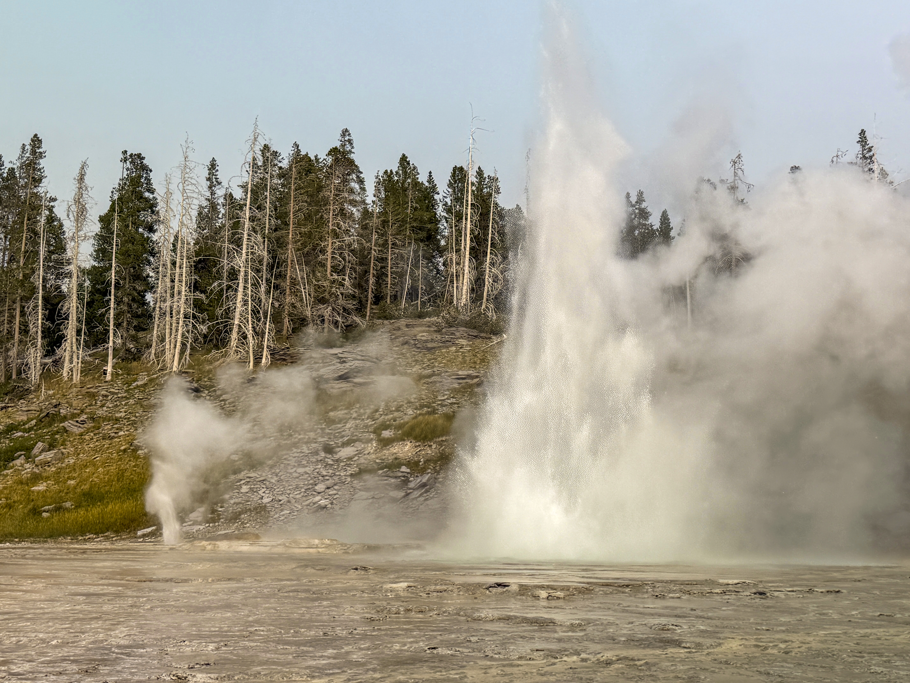
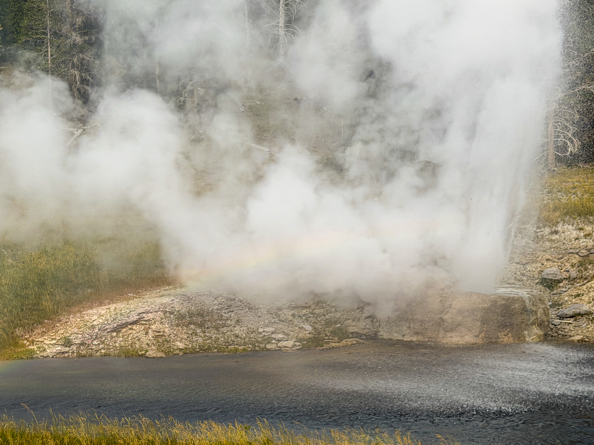
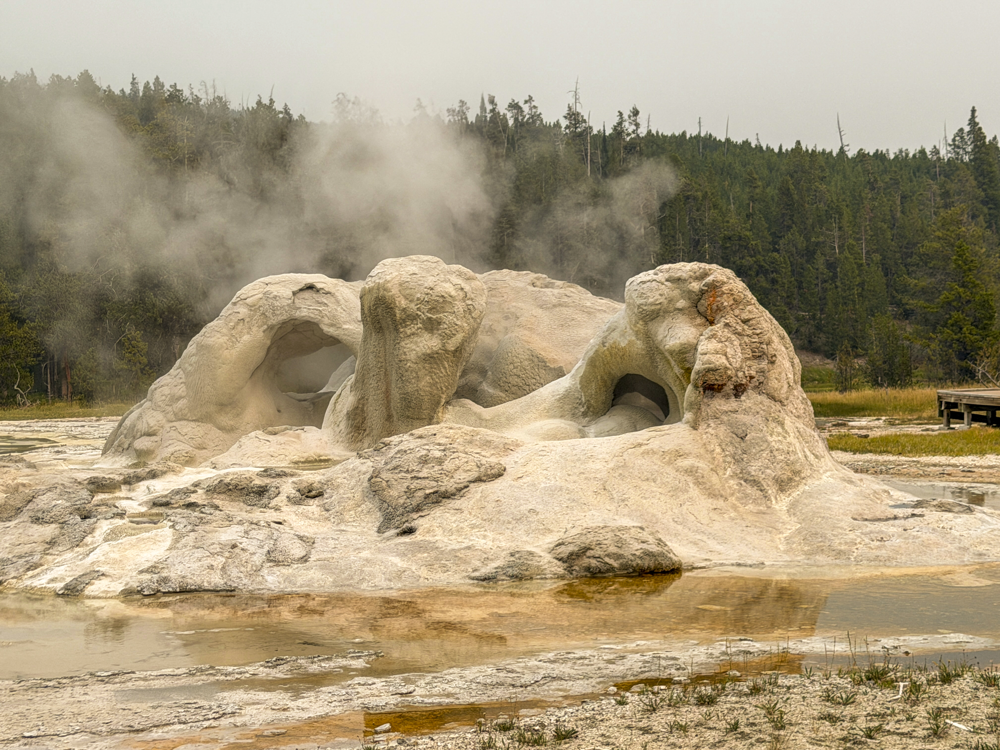
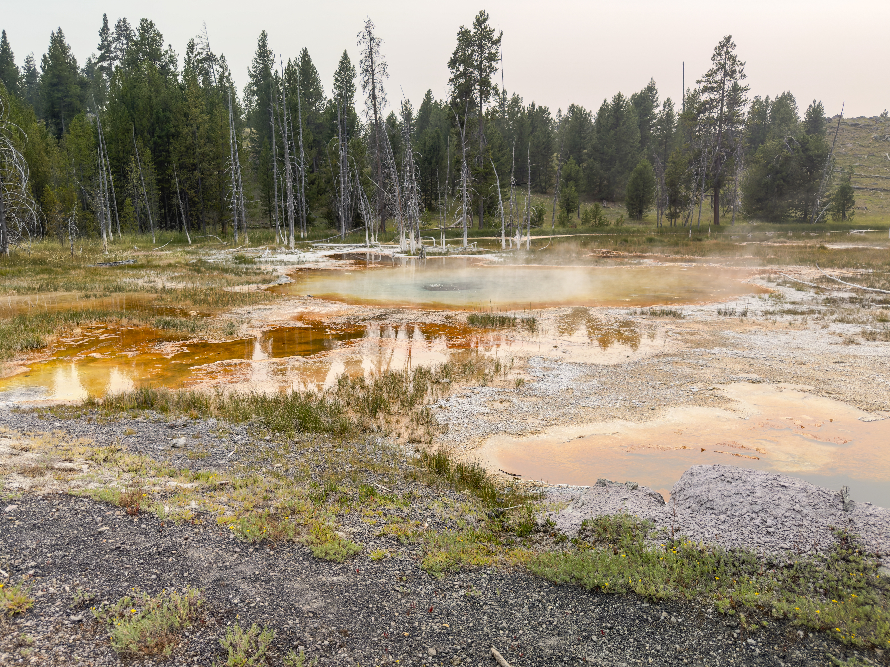

About Upper Geyser Basin
Day 4 of the Yellowstone trip
This region of Yellowstone is by far the most populated and tourist-dense region, as it harbors every single predictable geyser in the park. These geysers are monitored, and the times they erupt are shown on both their app and the tourist center. My family and I were very lucky, having been able to witness four of the five major geysers erupt in total, three on this day. Notably, this basin is where the well-known Old Faithful is.
Gallery:
 This strange-looking mound is Castle Geyser. Its base has been built up by centuries of eruptions, causing it to form into a castle-like shape, hence the name. Despite being the second closest large geyser to the parking lot, it has nowhere to sit down. |
 This is Castle Geyser during its eruption phase, which my family got a good look at from grand geyser, given this eruption lasts up to 20 whole minutes. After the eruption stops, a 40-minute-long noisy steam phase begins, and then it takes thirteen hours to refill. |
 This is the most grand geyser of the entire group, aptly named Grand Geyser. Uniquely, it's connected to two other geysers, being Turban, the raised platform to its left, and Vent, the sprinkler-like blast of water. This thing has a variability of 4.5 hours for its eruption time. |
 This marvelous, slightly-angled geyser is aptly named Riverside Geyser, and is among the most predictable of them, several signs of its eruption able to be seen before it does so. As you can see, the mist it erupts into the river can form a rainbow. |
 As per usual, the naming is on point with this one, it's called Grotto Geyser. It's not predictable, but it is seen pouring out water at a somewhat constant rate. By the way, if you're wondering why Old Faithful isn't here, it's because it was disappointing in comparison. |
 This is one of the many springs present within the Upper Geyser Basin, teeming with microbes in the warm and hot water. The dead trees which absorbed silica through their roots and died earned the name "Bobby Socks" trees, because of that peculiar look. |